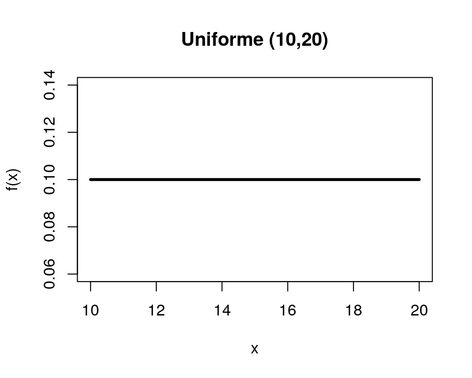
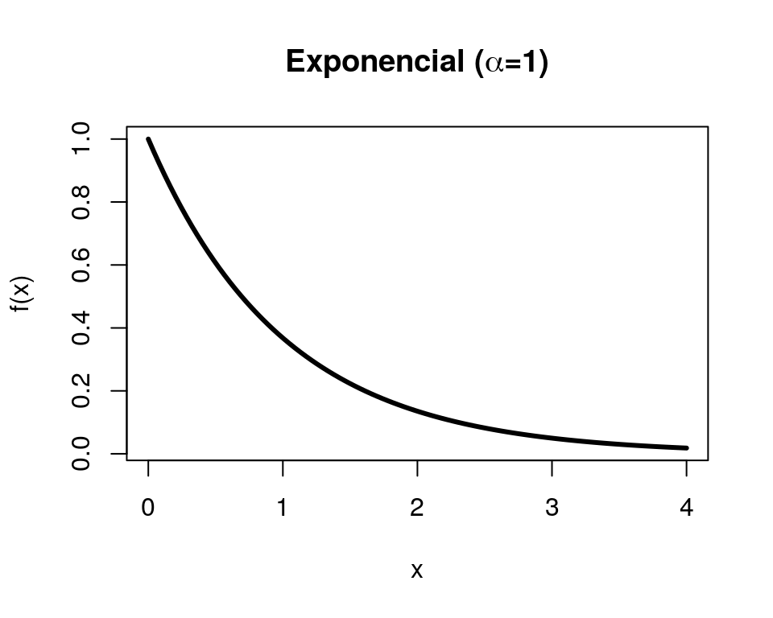
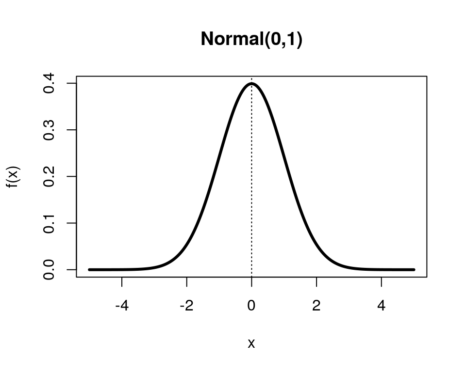

Noções de Probabilidade e Estatística
Parte 5 - Variáveis aleatórias contínuas
Lineu Alberto Cavazani de Freitas
1 Variáveis aleatórias contínuas
Uma variável aleatória é classificada como contínua se assume valores em qualquer intervalo dos números reais, ou seja, um conjunto de valores não enumerável. Dessa forma, não é possível atribuir probabilidades para um ponto específico, apenas para intervalos da reta.
2 Função densidade de probabilidade
A atribuição de probabilidades para o caso contínuo é definida pela área abaixo de uma função positiva denominada densidade de probabilidade que, tal como no caso discreto, caracteriza completamente o comportamento da variável aleatória.
A função \(f(x)\) é chamada função densidade de probabilidade (fdp) para uma variável aleatória contínua \(X\) se satisfaz as seguintes condições:
\(f(x) \geq 1\)
\(\int_{-\infty}^{+\infty}f(x)dx = 1\)
Através da função densidade de probabilidade é possível atribuir probabilidades à intervalos de valores da variável aleatória do tipo \([a,b]\) da seguinte forma:
\[P[a<X<b] = \int_{a}^{b}f(x)dx\]
Note como não é possível atribuir probabilidades a valores individuais, pois a probabilidade no caso contínuo é definida apenas para intervalos, desta forma a probabilidade para valores individuais é igual a 0 pois não há área sob a curva.
Além disso, as probabilidades calculadas sobre os intervalos \([a,b]\), \((a,b]\), \([a,b)\) e \((a,b)\) são as mesmas, para quaisquer valores de \(a\) e \(b\).
3 Medidas de posição para V.A’s contínuas
Tal como no caso discreto, a descrição completa do comportamento de uma variável aleatória contínua é feita através da sua função densidade de probabilidade, desta forma as medidas de posição da variável aleatória envolvem esta função.
A definição da mediana é idêntica ao caso discreto. Para a média adapta-se a expressão pois passa-se a usar a integral e não mais o somatório. Já para a moda toma-se o máximo da função densidade de probabilidade, isto é, o ponto mais alto da função.
3.1 Média
O valor esperado, média ou esperança da variável aleatória contínua \(X\), com função densidade dada por \(f(x)\) é dada pela expressão:
\[E(X)=\mu=\int_{-\infty}^{\infty}x f(x)dx\]
3.2 Mediana
A mediana é o valor \(Md\) que satisfaz às seguintes condições
\[P(X \geq Md) \geq 1/2 \ e \ P(X \leq Md) \leq 1/2\]
3.3 Moda
A moda (\(Mo\)) é o valor tal que
\[f(Mo) = max(f(x))\]
4 Medidas de dispersão para V.A’s
Para uma variável aleatória \(X\) com densidade \(f(x)\), a variância é dada por
\[\sigma^2 = \int_{-\infty}^{\infty} (x-\mu)^2 f(x)dx,\]
ou alternativamente
\[\sigma^2 = E(X^2)-\mu^2\]
em que
\[E(X^2)=\int_{-\infty}^{\infty} x^2 f(x)dx\]
O desvio padrão é a raiz quadrada da variância e tem a mesma unidade de medida que a variável original.
5 Principais modelos contínuos
Algumas variáveis aleatórias aparecem com bastante frequência em situações práticas. Nesses casos, a função densidade de probabilidade pode ser escrita de maneira mais compacta, isto é, existe uma lei para atribuir as probabilidades.
Os mais famosos modelos contínuos de probabilidade são:
- Uniforme contínuo
- Exponencial
- Normal
5.1 Uniforme contínuo
Uma variável aleatória \(X\) tem distribuição Uniforme Contínua no intervalo \([a,b]\), \(a<b\), se sua função densidade de probabilidade é dada por:
\[f(x)= \left\{\begin{matrix} \frac{1}{b-a}, & a \leq x \leq b \\ 0, & caso \ contrário \end{matrix}\right.\]
Para indicar que a variável aleatória X segue o modelo Uniforme Contínuo usa-se a notação \(X \sim U[a,b]\). O modelo Uniforme pressupõe que os valores possíveis para a variável têm todos a mesma probabilidade de ocorrência.
Além disso, \(E(X)=\frac{a+b}{2}\) e \(\sigma^2=\frac{(b-a)^2}{12}\).

5.2 Exponencial
Seja \(X\) uma variável aleatória que assume valores não negativos. Dizemos que \(X\) segue o modelo Exponencial com parâmetro \(\alpha>0\) se sua densidade é:
\[f(x)= \left\{\begin{matrix} \alpha e^{-\alpha x}, & x \geq 0 \\ 0, & caso \ contrário \end{matrix}\right.\]
Para indicar que a variável aleatória X segue o modelo Exponencial usa-se a notação \(X \sim Exp(\alpha)\). Além disso, \(E(X) = \frac{1}{\alpha}\) e \(Var(X) = \frac{1}{\alpha^2}\).
O cálculo de probabilidades com a Exponencial fica da seguinte forma:
\[P(a < X < b) = \int_{a}^{b} \alpha e^{-\alpha x}dx = -e^{-\alpha x}|^{b}_{a} = e^{-\alpha a} - e^{-\alpha b}.\]

5.3 Normal
Dentre todos os modelos teóricos, contínuos ou discretos, o mais importante e utilizado é o modelo Normal.
Dizemos que uma variável aleatória contínua \(X\) tem distribuição Normal com parâmetros \(\mu\) (média) e \(\sigma^2\) (variância), se sua função densidade de probabilidae é dada por:
\[f(x) = \frac{1}{\sigma \sqrt{2\pi}} e^{-\frac{(x-\mu)^2}{2\sigma^2}}, -\infty<x<\infty\]
Usa-se a notação \(X \sim N(\mu,\sigma^2)\).
Algumas propriedades da distribuição Normal são:
- \(f(x)\) é simétrica em relação a \(\mu\).
- \(f(x)\) vai para 0 quando \(x\) vai para \(\pm \infty\).
- O valor máximo de \(f(x)\) se dá para \(x=\mu\).
Para cálculo de probabilidades de fenômenos que seguem distribuição Normal deve-se resolver a integral da função densidade no intervalo de interesse, isto é,
\[P(a \leq X \leq b) = \int_a^b \frac{1}{\sigma \sqrt{2\pi}} e^{-\frac{(x-\mu)^2}{2\sigma^2}} dx.\]
Contudo esta integral só pode ser resolvida de modo aproximado através de métodos numéricos. Por essa razão a obtenção de probabilidades para o modelo Normal são calculadas manualmente (com o auxílio de tabelas) ou com o auxílio de um computador.
Para o cálculo via tabelas utiliza-se uma transformação que conduz sempre ao cálculo de probabilidades com uma variável com média 0 e variância 1, ou seja, transforma-se uma variável \(X \sim N(\mu,\sigma^2)\) em uma variável \(Z=\frac{X-\mu}{\sigma}\) e \(Z \sim N(0,1)\). Diz-se que a variável \(Z\) segue uma distribuição Normal Padrão ou Normal Reduzida.
Para determinar a probabilidade de \(X \in [a,b]\), procedemos da seguinte forma:
\[P(a \leq X \leq b) = P\left ( \frac{a-\mu}{\sigma} \leq \frac{X-\mu}{\sigma} \leq \frac{b-\mu}{\sigma} \right ) \]
isto é,
\[P(a \leq X \leq b) = P \left ( \frac{a-\mu}{\sigma} \leq Z \leq \frac{b-\mu}{\sigma} \right ) .\]
Desta forma, para quaisquer valores de \(\mu\) e \(\sigma\) utilizamos uma tabela da distribuição Normal Padrão para obter probabilidades.

A distribuição Normal é uma das mais importantes na Estatística. Diversos fenômenos comportam-se tal como esta distribuição, em que há valores muito frequentes em torno da média e, conforme se distancia da média, as frequências se reduzem. Além disso, ela pode ser usada como aproximação para outras distribuições como, por exemplo, a Binomial em que se \(X \sim Bin(n,p)\), \(E(x) = np\) e \(Var(x) = np(1-p)\) uma aproximação é dada por \(Y \sim N(np, np(1-p))\) e é utilizada sem grandes perdas quando a média e a variância da Binomial são maiores que 5.
Críticas e sugestões a este material sempre serão bem vindas.
Para entrar em contato comigo, envie uma mensagem para lineuacf@gmail.com.